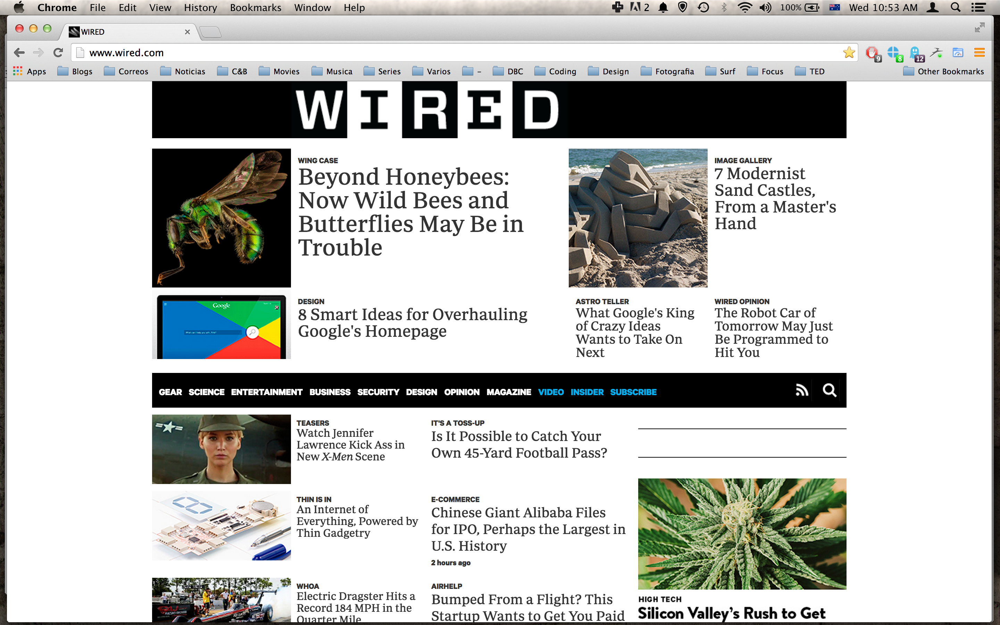
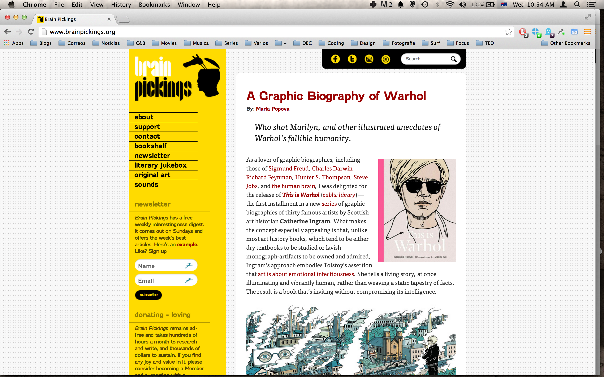
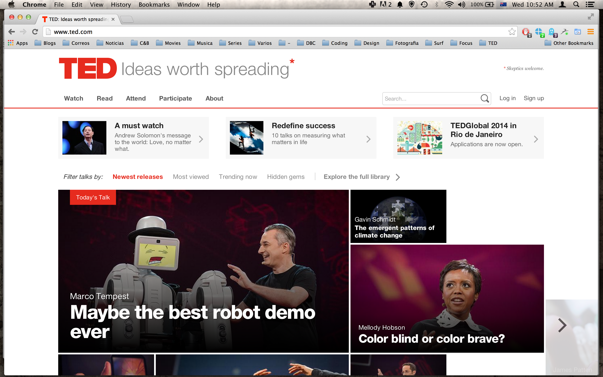

Technical Blog: Week 1
I will answer jointly why I choose these websites, since in every instance it was for the same reason. I chose the three of them because I enjoy their content, rather that issues related to design or performance. In one way or another they provide excellent articles, videos, reflections and other material that keep me informed and makes me learn or question things. Also, all of my choices make me feel the same way after browsing them for a while and it is also probably how any site makes me fell. I eventually get tired and a bit bored of being on a website for too long. No matter how interesting, I tend to feel I'm wasting my time if I spend hours on a website, unless I'm watching a movie or reading a book.
Wired
I'm drawn initially to the two articles on the top left of the page. When standing back I focus on the whole block above the navigation bar which seems to be the most important. I consider the visuals of this website simple yet a bit cluttered, light, appealing and discreet. For the problems and content refer to my wireframing exercise please. Content, purpose and focus are serious, innovative, varied, interesting and challenging. Regardless of where you are it is pretty easy. It is fairly straightforward to find something as the navigation bar is present each time you open a webpage and it has well organized subsections. PLus the search button is also always present when opening a page. Now browsing all of the content is not easy as it is a LOT of content, and you need at least to browse individually the main 8 sections. This website doesn't sell anything and as a matter of fact has little to none advertising.
Brain pickings
The first thing to catch your eye is the most recent article being displayed, when you draw back a bit you see it in a more integral way as the sidebar becomes part of the focus. The main article I believe is indeed the most important part, as there is nothing but that and the sidebar unless you scroll down. I would call the site slightly disorganized, direct, long, unharmonious and basic. Once again, to address the website goal and content go to my wireframing exercise. The content of this site is intellectual, curious, ample, visual and reflective. The ease of findings things in any given page or browsing the whole content is a bit misleading. At first site you have a blog like succession of articles and a sidebar with subsections. However, those sections don't reflect a clasification of the articles. In some cases they present side projects of the web's creator with a completely different structure that don't have very visible links to return to the original page. Another of the links is exclusively dedicated to subscribe to a newsletter, something we can already do from a miniform in the homepage. This site doesn't sell products but it does offer the possibility to choose for a paid subscription or do a donation.
TED
From the get go, the two main videos are smack in the middle and they are the two main things to notice and then you notice there are some more videos peeking underneath and the possibility to scroll to the sides. This area is the most important I think at least to engage the user. Once he is hooked he is more likely to go and explore what lies beyond. The site is compartmented, quirky, image dominated, sleek and attention grabbing. I know it's getting old, but to check this site's purpose and content, go to the wireframing section of the site. Its content is educational, multidisciplinary, fun, inspiring and engaging. The site seems reasonable enough to browse wealth of talks that have been given, as they have provided a clear structure with the videos sorted into categories. I didn't encounter much problems looking for sections or content independently of what areas of the website I was visiting